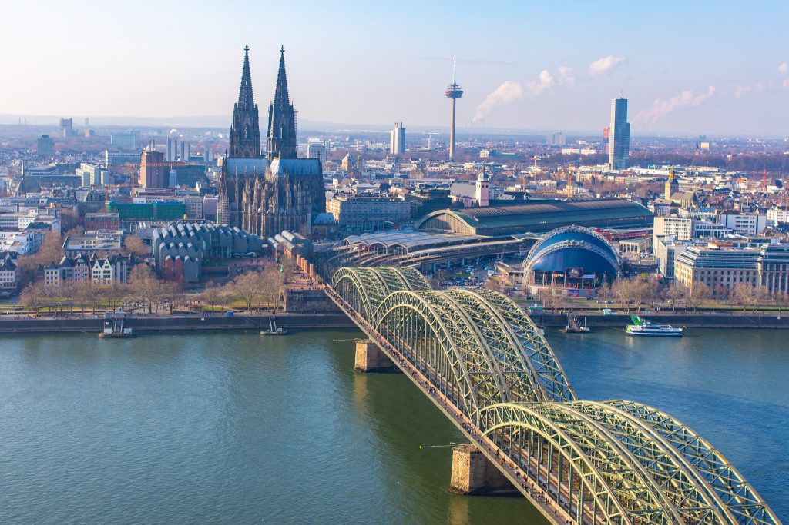

About Cologne
Cologne (Köln) is one of Germany's oldest cities, founded by the Romans over 2,000 years ago. It sits on the banks of the Rhine and is dominated by its magnificent Gothic cathedral — the Kölner Dom — one of the largest and most beautiful churches in the world.
Cologne is also famous for its Karneval (carnival) celebrations, the famous Eau de Cologne fragrance (invented here in the 18th century), and its vibrant, welcoming atmosphere. The city has a rich art scene and numerous world-class museums.

Top Attractions
Cologne Cathedral (Kölner Dom)
A UNESCO World Heritage Site and Germany's most visited landmark. Construction began in 1248 and was only completed in 1880. Climb the 533 steps to the South Tower for panoramic views.
Museum Ludwig
One of Europe's most important modern art museums, housing works by Picasso, Andy Warhol, and many other major 20th-century artists.
Cologne Old Town (Altstadt)
A lively riverside district with pubs, restaurants, and historic buildings. The perfect place to try the local Kölsch beer.
Hohenzollern Bridge (Love Lock Bridge)
The iconic rail bridge across the Rhine, covered in hundreds of thousands of padlocks left by couples from around the world.
Cologne Zoo
One of Germany's most popular zoos, with over 10,000 animals from 700 species. Set in beautiful parkland on the banks of the Rhine.
Chocolate Museum
A hugely popular museum dedicated to the history and production of chocolate — including a famous chocolate fountain. Great for families.